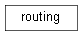

hydrological_modules package¶
Submodules¶
hydrological_modules.miscInitial module¶
hydrological_modules.initcondition module¶
-
class
hydrological_modules.initcondition.initcondition(initcondition_variable)[source]¶ Bases:
object# ******************************************************** # * READ/WRITE INITIAL CONDITIONS ************ # ********************************************************
hydrological_modules.inflow module¶
-
class
hydrological_modules.inflow.inflow(inflow_variable)[source]¶ Bases:
object# ******************************************************** # * READ INFLOW HYDROGRAPHS (OPTIONAL)**************** # ******************************************************** # If option “inflow” is set to 1 the inflow hydrograph code is used # otherwise dummy code is used
hydrological_modules.readmeteo module¶
hydrological_modules.snow_frost module¶
-
class
hydrological_modules.snow_frost.snow(snow_variable)[source]¶ Bases:
object# ******************************************************** # * RAIN AND SNOW ************************************* # ********************************************************
# Domain: snow calculations evaluated for center points of 3 sub-pixel # snow zones A, B, and C, which each occupy one-third of the pixel surface # # Variables ‘snow’ and ‘rain’ at end of this module are the pixel-average snowfall and rain # # Zone A: lower third # Zone B: center third # Zone C: upper third
hydrological_modules.evaporationPot module¶
-
class
hydrological_modules.evaporationPot.evaporationPot(evaporationPot_variable)[source]¶ Bases:
object@brief EvaporationPot module @details Calculate potential evapotranspiration from climate data @author PB @date 10/11/2017 @copyright PB 2017
-
dynamic()[source]¶ Dynamic part of the potential evaporation module calculating potential Evaporation from climate data mainly based on FAO 56 http://www.fao.org/docrep/X0490E/x0490e08.htm#penman%20monteith%20equation http://www.fao.org/docrep/X0490E/x0490e06.htm http://www.fao.org/docrep/X0490E/x0490e06.htm and LISVAP https://ec.europa.eu/jrc/en/publication/eur-scientific-and-technical-research-reports/lisvap-evaporation-pre-processor-lisflood-water-balance-and-flood-simulation-model
-
hydrological_modules.landcoverType module¶
-
class
hydrological_modules.landcoverType.landcoverType(landcoverType_variable)[source]¶ Bases:
object# ******************************************************** # * LAND COVER TYPE ********************************* # ********************************************************
-
dynamic()[source]¶ dynamic part of the land cover type module calculating soil for each land cover class
-
hydrological_modules.evaporation module¶
-
class
hydrological_modules.evaporation.evaporation(evaporation_variable)[source]¶ Bases:
object@brief Evaporation module @details Calculate actual evapotranspiration @author PB @date 01/08/2016 @copyright PB 2016
-
dynamic(coverType, No)[source]¶ Dynamic part of the soil module - potET calculating potential Evaporation for each land cover class with kc factor get crop coefficient, use potential ET, calculate potential bare soil evaporation and transpiration @param coverType (string) land cover type: forest, grassland .. @param No [int] Number of land cover type: forest = 0, grassland = 1 ...
-
hydrological_modules.capillarRise module¶
-
class
hydrological_modules.capillarRise.capillarRise(capillarRise_variable)[source]¶ Bases:
object# ******************************************************** # * CAPPILAR RISE ************************************ # ********************************************************
calculate cell fraction influenced by capillary rise
hydrological_modules.interception module¶
-
class
hydrological_modules.interception.interception(interception_variable)[source]¶ Bases:
object@package # ******************************************************** # * Interception ************************************* # ********************************************************
-
dynamic(coverType, No)[source]¶ Dynamic part of the interception module calculating interception for each land cover class
@param coverType land cover type: forest, grassland .. @param No Number of land cover type: forest = 0, grassland = 1 ... Args:
coverType: coverType land cover type: forest, grassland .. No: Number of land cover type: forest = 0, grassland = 1 ...
-
hydrological_modules.soil module¶
hydrological_modules.waterdemand module¶
hydrological_modules.groundwater module¶
hydrological_modules.routing module¶
hydrological_modules.lakes_reservoirs module¶
-
class
hydrological_modules.lakes_reservoirs.lakes_reservoirs(lakes_reservoirs_variable)[source]¶ Bases:
object# ******************************************************** # * LAKES AND RESERVOIRS ************************ # ********************************************************
-
dynamic(storageAtLakeAndReservoirs, downstreamDemand=None, avgChannelDischarge=None)[source]¶ dynamic part of the lakes and reservoirs module
-
getWaterBodyOutflow(maxTimestepsToAvgDischargeLong, downstreamDemand=None, avgChannelDischarge=None)[source]¶
-
hydrological_modules.waterbalance module¶
-
class
hydrological_modules.waterbalance.waterbalance(waterbalance_variable)[source]¶ Bases:
object# ******************************************************** # * WATER BALANCE ************************************ # ********************************************************
# 1.) check if water balnace per time step is ok ( = 0)# 2.) produce an annual overview - income, outcome storage